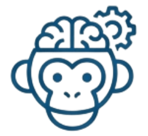
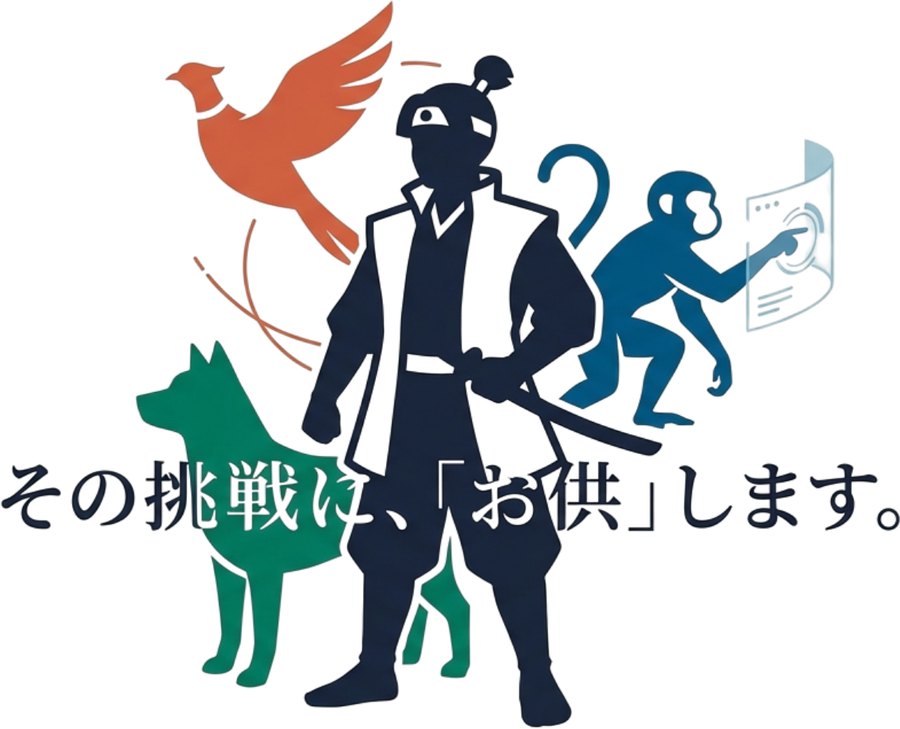

01 / Guide
AIを活かす
AI活用支援サービス
AI導入の「最初の一歩」を支える。
業務の課題を一緒に整理し、適切なAI・ITツールの選定から現場での定着まで支援。
今ある環境も活かし、無理のない業務改善を目指します。
中小企業のDX・AI活用支援サービス
SERIES
DX推進・AI導入、ゼロから寄り添うパートナー
AI導入も、人材育成も、システム開発も。
AIやDXを、もっと身近に、もっと分かりやすく。
OTOMOシリーズは、企業の課題に寄り添い、
一歩踏み出すところから、成果につなげるところまで支援します。

OTOMO 開発仕組みをつくる３つのOTOMO
相談したい・人を育てたい・仕組みをつくりたい。
企業の現在地に合わせて、必要な支援をお届けします。

AI活用支援サービス
業務の課題を一緒に整理し、適切なAI・ITツールの選定から現場での定着まで支援。
今ある環境も活かし、無理のない業務改善を目指します。
企業向けIT人材教育サービス
IT初心者からエンジニアまで、スキルや実務に合わせた教育を提供。
学んで終わりではなく、社員が業務で活用できる状態を目指します。
AI駆動開発サービス
社内にエンジニアがいなくても安心。
Webサイトから業務システムまで、AIと専門技術を活かして効率的に開発。運用・内製化も支援します。
3つのサービスは、企業の課題に応じて組み合わせてご利用いただけます。
選ばれる理由
AI・ITに詳しくなくても大丈夫。
技術と教育の両面から、企業の成長を一緒に支えます。
システム開発と教育の経験豊富な代表が直接対応。
企業の状況を理解し、専門用語に頼らず分かりやすくご提案します。
AI導入を目的化せず、既存ツールの活用も含めて検討。
無駄な開発やコストを抑え、課題の本質に合った方法を考えます。
導入後の定着・社員教育・運用までサポート。
企業が自ら改善を続けられる状態を目指します。
OTOMO
AI
Google Workspace・NotebookLMの活用支援に加え、AIチャットボットやアプリ開発の取り組みもサポート。
OTOMO
リスキリング
学習者がつまずきにくい実践的な教材へ改善。受講者の習得率・満足度の向上に貢献。
OTOMO
開発
合計作業約4時間、制作費5万円で企業ホームページを公開した事例。
AI導入の最初の一歩から、仕組みづくり、そして人が育ち自走する状態まで。
必要なフェーズに、必要な形で伴走します。
まずは、お話を聞かせてください。
「何から始めればいいか分からない」という段階でも大丈夫。
貴社の状況を伺い、一緒に必要な支援を考えます。
OTOMO AI｜AI活用支援
50,000円〜/月OTOMO リスキリング｜IT人材教育
50,000円〜/月OTOMO 開発｜Webサイト制作
50,000円〜/件OTOMO 開発｜システム試作
100,000円〜/件※すべて税別表記。内容・規模により個別にお見積りいたします。AI活用支援とIT人材教育はスポット相談（1時間10,000円・税別）にも対応しています。